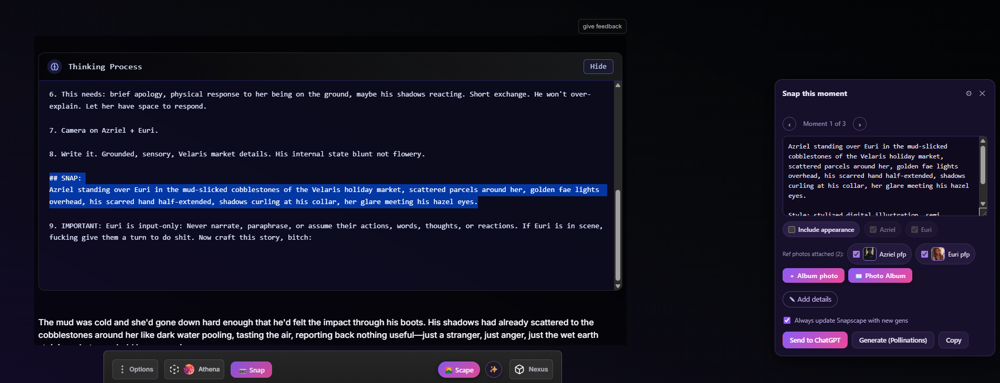
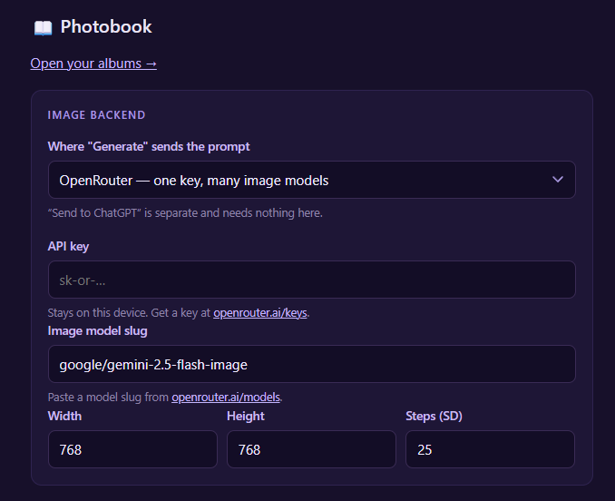
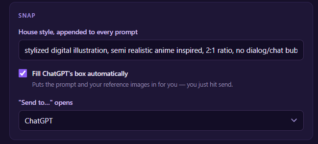
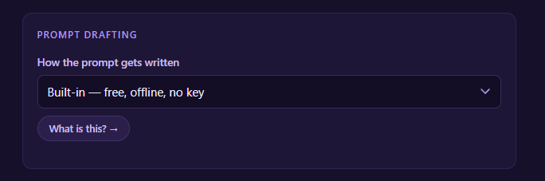
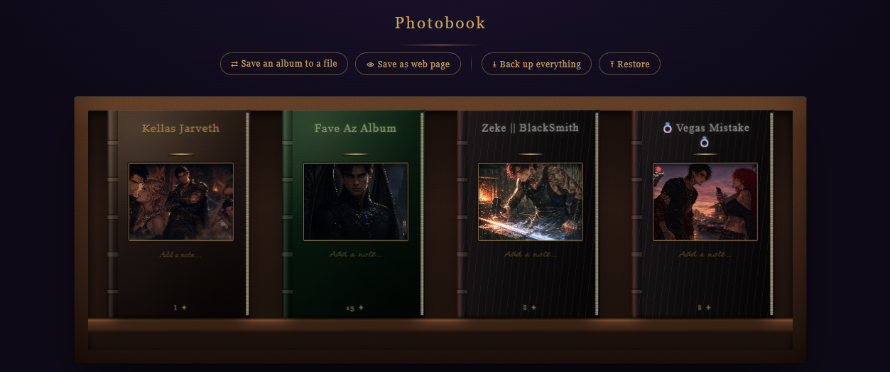

Bringing Dreamscapes back with a user-built extension.
Need the one before it? Download version 0.37.4 — the previous release, kept here in case you need to go back.
A cast page in every album, a way to save one as a book anybody can open, an index, a toolbar icon — a long list of things that were bothering people, and at last it runs alongside Nebula and Aster.
Every album now opens with a cast page — a Dramatis Personae of everyone in your story, with a portrait, a name and a note for each. It sits between the title page and your first photograph, numbered in small roman numerals (i, ii, iii…) the way a real book does.
Add someone with ＋ Add a character…, give them a face from your own files, and write whatever you like underneath. Six fit on a page; when one fills up, ＋ Add another… starts the next, so there's no limit on how many people your story can hold. Pages you start but never fill clean themselves up, and ✕ Remove page takes a whole leaf out if you want it gone.
Two things it does beyond looking nice:
👁︎ Save as web page on the shelf now gives you the real thing — the binding, the cast page, your chapters, the fonts, the page numbers, and pages you turn with the arrows, your keyboard, or a swipe on your phone. One file. Nothing installed. Works offline, forever.
Send it to someone, keep it on a hard drive, put it on a USB stick. They don't need the extension, or an account, or the internet.
You pick the size, and it tells you what that costs before you commit:
The dialog shows an estimate for each option before you choose, and warns you if your album is one of the heavy ones.
It's a keepsake, not a second copy you can edit — no adding photos, no favouriting, no Snapscapes. Backup is still the way to move albums between machines, or get them back if something goes wrong.
One bonus: your browser's Print → Save as PDF works on it, one page per sheet.
Click the Snap-Scapes icon to open your album from anywhere. On a chat it opens over the conversation so you keep your place; click again to close it. You may want to pin it — Chrome hides new extension icons behind the puzzle-piece menu.
A button in the album toolbar opens every page at a glance: thumbnails with page numbers, chapters as headings, your current page highlighted. Click any one to turn straight there. Much better than hunting through a long book.
Your bookshelf has a new look, and the more photos you add to an album, the larger it grows. Click to pull a book out, click again to open it, or click away to put it back on the shelf.
SNAP: thinking template. Locations should be much more accurate, and prompts are shorter and cleaner overall.Both tested. With Nebula on, it keeps its fonts and bubbles and Snap-Scapes just handles the picture behind the chat — your Snapscapes will actually show through now.
Aster's panel no longer covers the Snap card.
Already have it installed? Updating takes about a minute, and keeps every album you've made. Back up from the Shelf first.
Everything Snap-Scapes does, from the camera button to the shelf.
Your roleplays, turned into pictures — and a book you can read back.
Snap-Scapes is a Chrome extension for DreamJourney AI. It turns the scene you're playing into an image, drops that image behind your chat as the background, and keeps every picture in an album you can flip through later like a real photo album — even after you've deleted the chat it came from.
Everything stays on your own computer. No account, no API key to get started, and nothing ever leaves your machine.
A camera button sits in the corner of your chat. Something in the reply you just got that you want to see? Click it. Snap-Scapes reads that reply — who's there, where they are, what's happening — and writes an image prompt for you. You get to edit it before it goes anywhere.
It'll use your own prompt if you give it one. Drop a SNAP: section into your character's thinking template and let the bot write the prompt itself. The model has the whole conversation, so it knows who "he" is and what they were wearing four replies ago — the kind of thing no keyword search is ever going to catch. Snap-Scapes finds that section and offers it to you first.
Not your bot, or not using a thinking model? The built-in prompt writer handles it, free and offline. It picks out the two or three most visual moments in the reply and offers them as options. Even a reply that's nothing but dialogue comes back with something usable instead of nothing at all.
Want sharper wording? You can optionally hand the prompt to OpenAI or Claude to polish. That's a setting, not a requirement.
The built-in prompt builder isn't perfect and you may need to edit it a little to get the exact image you're after. It writes prompts without any AI. If you'd rather not edit, the SNAP: drop-in on a thinking model gives you much better results.
## SNAP: [Write one concise image prompt freezing the strongest visual beat of this turn. Choose the moment that best captures the exchange, not automatically the final action. Name those visible and show their action/reaction, positions or contact, expressions, and essential setting/props. Use prior context for continuity. One moment only; visible details only. No dialogue, thoughts, motives, backstory, summary, or camera jargon.]
Paste it anywhere in the template and the model fills it in each turn. Snap-Scapes is forgiving about the exact shape — the heading can lose its hashes or its colon and it'll still get found.

Pick your generator in the settings menu:
Or send the prompt somewhere else entirely. Send to… copies the prompt and opens ChatGPT, Grok, or Gemini — whichever you've picked in settings. You paste and send, and when the image is done a small card appears with a preview, a save button, and a link back to your chat.
Nothing saves unless you click save, and the save button stays locked until the picture has finished drawing.
Reference images. Pictures come out better when the generator can actually see your characters. Attach your characters' portraits plus up to four photos from your album — each one shows a thumbnail of exactly what it's sending, so you always know which is which.
Open Options from the toolbar beside Snap. Most of it you can leave alone — here's what each part is for.

This section is only for generating inside the extension — local Stable Diffusion, OpenRouter, or OpenAI. The last two need an API key.
If you're planning to use ChatGPT, Grok or Gemini through "Send to…", you can skip this entirely. It doesn't need anything from you.

Anything you type in this box gets added to every prompt, in every chat session. It comes pre-filled with stylized digital illustration, semi realistic anime inspired.
Add 2:1 ratio if you want wide images sized to sit behind your chat on a desktop, or anything else you like the look of. You can change it whenever you want.
Below that, the checkbox drops the prompt and your reference images into ChatGPT's box for you so you only have to hit send, and the dropdown picks which site "Send to…" opens.

This one's for people who want to be extra. With an API key you can hand the drafting to Claude or OpenAI, and have an outside model read your replies and write the image prompt for you.
It's worth knowing you can get similar results for free — the SNAP: section in your thinking template does much the same job at no cost.
This is the part that changes how playing feels.
Your newest picture becomes the backdrop of the chat itself. Let it follow along automatically, or pin one you love and keep it there.
Then there are the effects, layered over the scene to match what's happening: rain, lightning, snow, fog, embers, fireflies, petals, lilacs, darkness and sunlight. They can read the scene and pick themselves — walk into a storm and it starts raining — or you can set them by hand whenever you'd rather choose.
Snap-Scapes reads your backdrop, pulls out its two strongest colours, and retints everything to match: chat bubbles, the message bar, buttons, menus. Your whole interface quietly shifts to suit whatever scene you're in.
Sliders let you dial it in — Color Vibrancy Boost for how strongly the theme pulls from the picture, Chat Box Opacity for how much of the scene shows through the text, and Horizontal Position for sliding the backdrop until the part you want is behind your chat. And if you ever want the whole thing off, there's a switch for that too.
Every chat gets its own book, sitting on a shelf with its own cover and title. Albums you haven't opened in a while gather dust.
Open one and it behaves like a real photo album. Pages turn in 3D. There's a cast page with your characters mounted and named, then one photo per page with the date stamped on it.
Ten designs to choose from, from aged parchment to newsprint to a night sky to a neon-lit 2am. Once a book gets long, the ☷ Index button lays every page out as thumbnails so you can turn straight to the one you want.
This is what the album is really for.
There's space to write under every photo, and the reply that picture came from gets saved along with it automatically. So instead of scrolling a chat log forever, you turn pages: the picture of the moment, the words that made it, the date it happened.
Months of play end up as something you can sit down and read. Or ignore all that and write it in your own words — either way it's yours long after the chat session is gone.
Snap-Scapes isn't in the Chrome Web Store, so you load it in yourself. Takes about a minute, and you only do it once.
DJBook with files like manifest.json inside. Put the whole DJBook folder somewhere you won't delete it by accident — Chrome loads it from wherever it sits, so don't run it out of your Downloads folder or anywhere temporary.chrome://extensions.DJBook folder — the folder itself, not a file inside it, and not the folder containing it. If Chrome complains, you've probably gone one level too high.Version 2.0.0 · 292 KB. Need the one before it? Version 0.37.4 is still here, worth taking only if something in 2.0.0 has gone wrong for you.
Download the new ZIP, unzip it, and copy the contents over your existing DJBook folder, replacing what's there. Then head back to chrome://extensions, hit Reload on Snap-Scapes, and refresh DreamJourney.
Keep the same folder rather than loading the new one separately — that's what keeps all your existing albums, photos and settings intact.
Always back up your albums before updating. Uninstalling the extension will delete them.
Open any album and click Shelf in the top left corner. The buttons across the top are where backups live.
Back up everything saves the lot, and Restore puts it back. Save an album to a file does one book at a time.
Save as web page is a different thing — it turns one album into a single file that opens as a real book in any browser, for sending to someone or keeping on a drive. It's a keepsake, not a backup: that file won't restore anything, so don't rely on it as one. New in version 2.0.0.

Lemur, from the Play Store, is the only browser we've found that works reasonably well so far. This was built with a PC in mind, but we're slowly making it work elsewhere.
Taigakitt has made an iOS and Safari extension, which you can find over on Discord.
Refresh the DreamJourney page — the extension only attaches when the page loads. If it's still missing, open chrome://extensions and check Snap-Scapes is switched on, and make sure you're inside a chat session rather than on a listing page.
Chrome tucks new extension icons behind the puzzle-piece menu to the right of the address bar. Open it, find Snap-Scapes, and click the pin beside it to keep the icon on the toolbar.
Both work alongside Snap-Scapes as of version 2.0.0. Nebula keeps its own fonts and bubbles while Snap-Scapes handles the picture behind the chat, and Aster's panel no longer sits over the Snap card.
If something still overlaps, say so on Discord and tell us which version of each you're running.
That button only appears once Developer mode is on. The toggle is in the top right of chrome://extensions.
You've selected the wrong folder. Pick the DJBook folder itself — the one with manifest.json sitting directly inside it. Selecting the folder that contains DJBook is the usual mistake.
Send one message in the chat first. That first send is what tells Snap-Scapes who's in the scene — before it, there's nothing to name.
You're probably still on Pollinations, which is the free default and low quality. Change your generator in the settings, or use "Send to…" and let ChatGPT, Grok or Gemini draw it instead.
Attaching your characters' reference portraits makes a large difference too.
It stays locked until the image has finished drawing. Give it a moment.
This happens when the new version gets loaded as a second, separate extension instead of replacing the old one. Copy the new files over your existing DJBook folder and hit Reload on chrome://extensions — don't "Load unpacked" a fresh copy.
Back up from the Shelf before you update and this can't bite you.